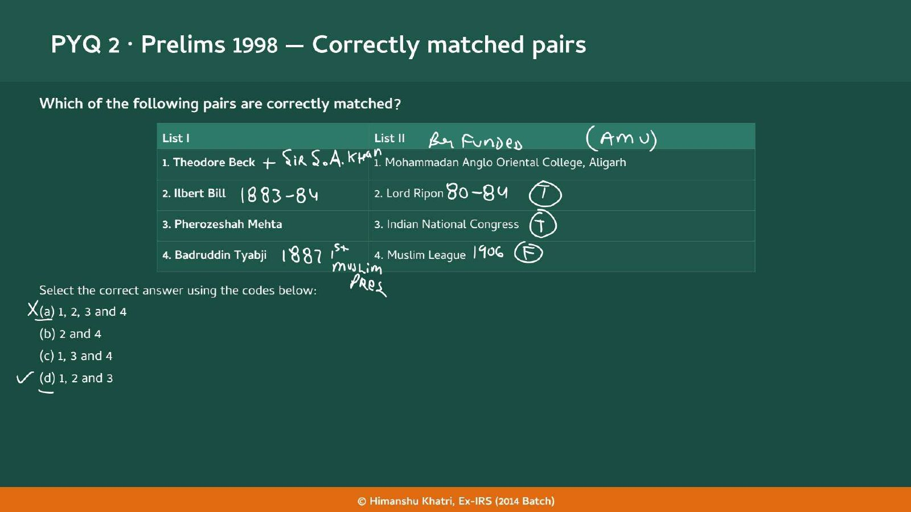
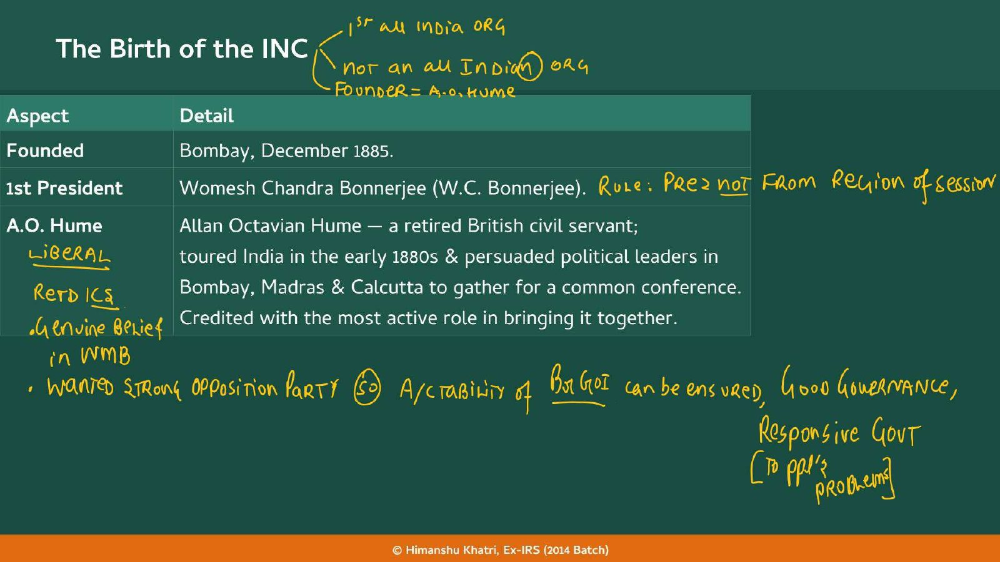
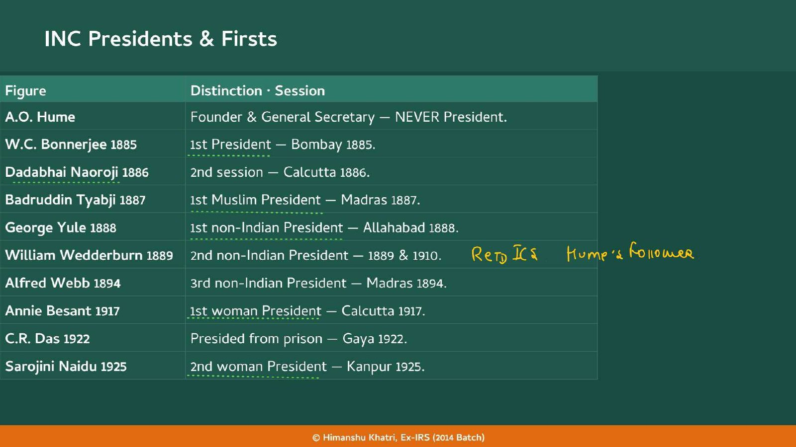
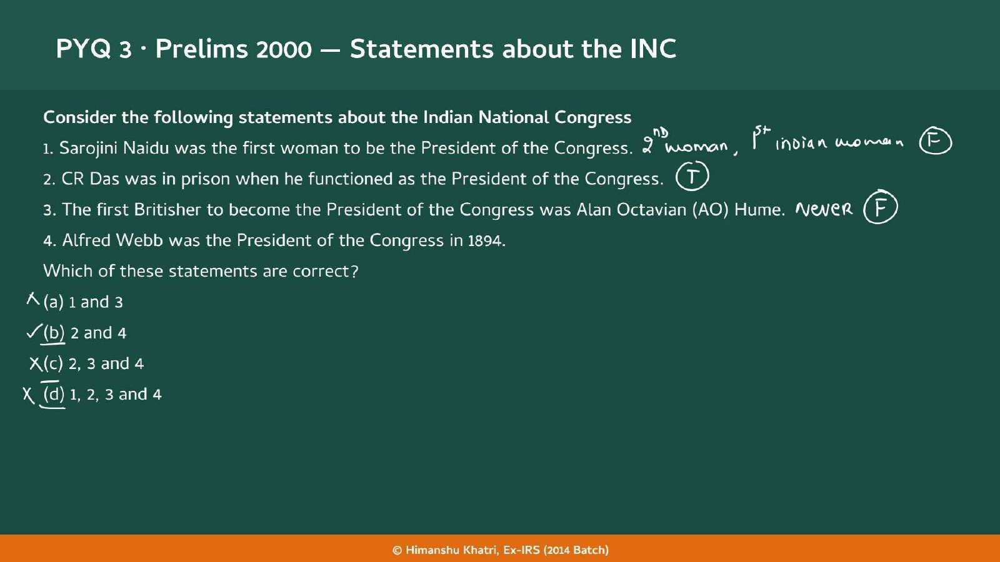
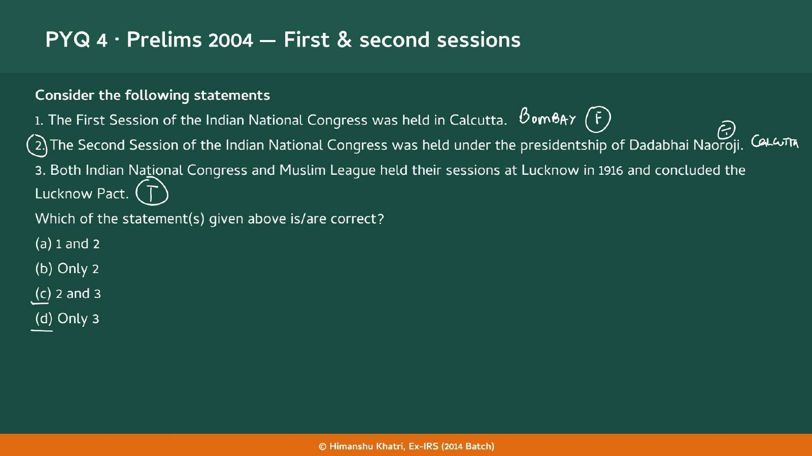
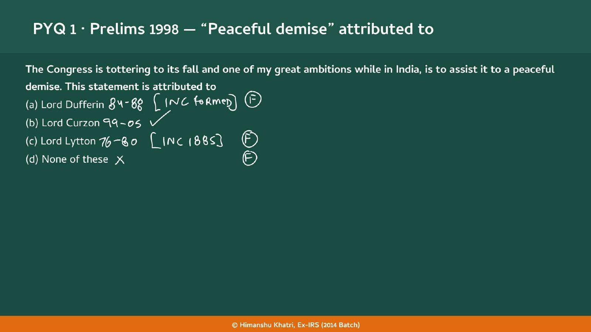
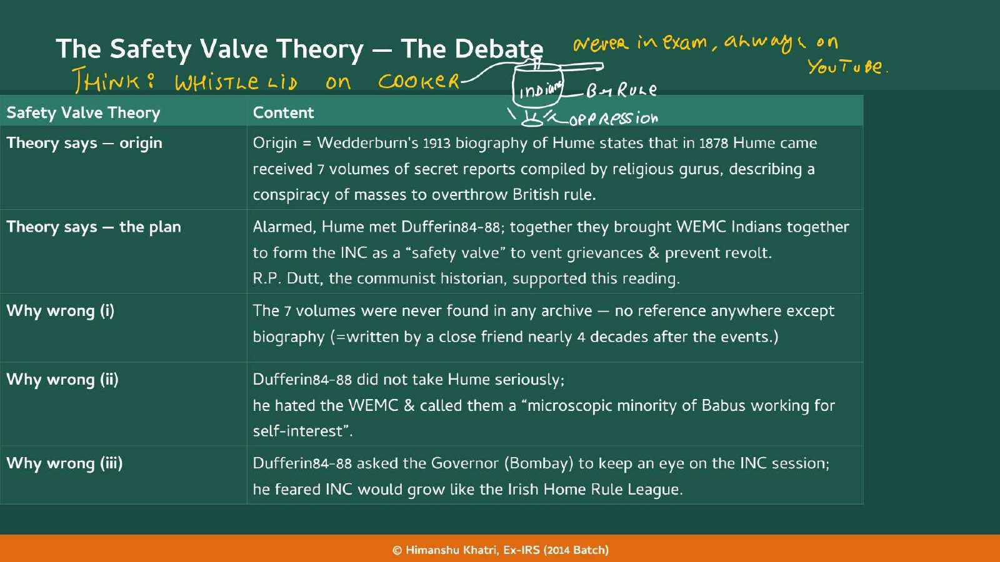
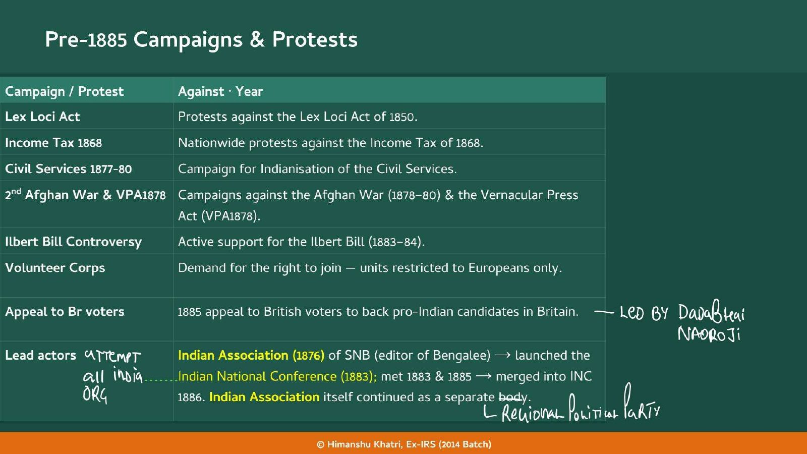
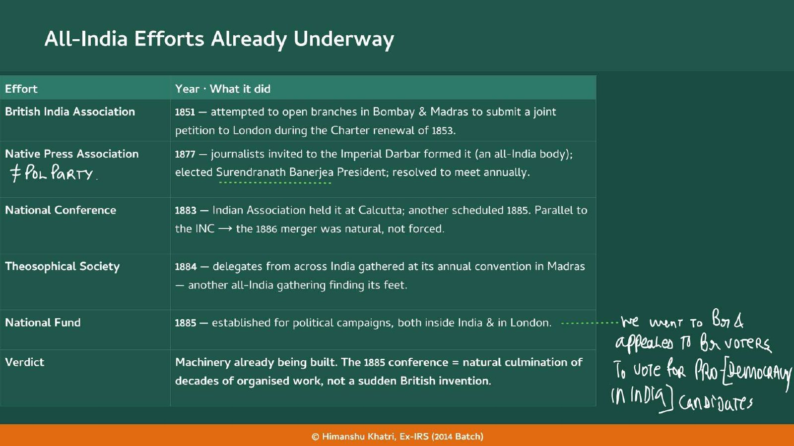

Chapter 23: Pre-INC Organisations and the Early Indian National Movement
The Indian Association 1876, the British India Association 1851 and the other regional bodies in Section 4 are the precursors that Chapter 23 studies in full.
| Year | Paper | Topic | Answer |
|---|---|---|---|
| 1998 | Prelims | (Prelims 1998) | (B) Lord Curzon |
| 1998 | Prelims | (Prelims 1998) | (D) 1, 2 and 3 |
| 2000 | Prelims | (Prelims 2000) | (B) 2 and 4 |
| 2004 | Prelims | (Prelims 2004) | (C) 2 and 3 |
| 2008 | Prelims | (Prelims 2008) | (B) Bombay |
| 2011 | Prelims | (Prelims 2011) | (A) To agitate for Indian political reforms in the House of commons |
| 2015 | Prelims | (Prelims 2015) | (B) Only 2 |
The INC was not a British invention: decades of regional campaigns and all-India attempts came first, and Hume was the bridge and the umbrella, not the architect.
Read it like a film first. Then go to the notes: every fact below is expanded there.
Story spine: Decades of regional campaigns and attempts at all-India bodies prepared the ground; Hume, a Liberal retired civil servant, bridged Bombay, Calcutta and Madras and gave the INC protective cover, so the British 'Safety Valve' story is a friend's legend while the 'Lightning Conductor' reading is the sound one.
| Character | Role in the story | Hook |
|---|---|---|
| A.O. Hume | Founder and General Secretary; Liberal retired civil servant; never President | The Bridge and Umbrella |
| W.C. Bonnerjee | 1st President, Bombay 1885 | B and B |
| Dadabhai Naoroji | 2nd session, Calcutta 1886; led the 1885 appeal; invited Webb | The Grand Inviter |
| Badruddin Tyabji | 1st Muslim President, Madras 1887; died before the League | The INC's Man |
| William Wedderburn | Co-founder; 2nd non-Indian President; biographer; Indian Parliamentary Committee 1893 | The Biographer |
| W.S. Caine | With Wedderburn set up the Indian Parliamentary Committee 1893 | Caine to Commons |
| John Jardine | Co-founder; Judge of the Bombay High Court; MP 1906-1918 | The Judge |
| George Yule | 1st non-Indian President 1888; Andrew Yule and Company; 400 tigers | The Merchant |
| Alfred Webb | 3rd non-Indian President 1894; Irish MP | The Irish Friend |
| Dufferin 84-88 | Viceroy who mocked the Moderates and watched the INC | The Doubter |
| Curzon 99-05 | Viceroy who hoped for the INC's peaceful demise | The Curser |
| Surendranath Banerjea | Indian Association 1876; Conference 1883; NPA President 1877 | The Regional Voice |
| Gokhale | 1913: British founder gave protective cover | The Conductor |
| Annie Besant and Sarojini Naidu | 1st woman President 1917 and 2nd woman President 1925 | Besant before Naidu |
| Key term | In plain words |
|---|---|
| INC | Indian National Congress: founded Bombay, December 1885; the 1st all India ORG, but not an all Indian one (the teacher) |
| Safety Valve Theory | The claim that Hume founded the INC so that educated Indians could vent grievances and prevent a mass revolt |
| Lightning Conductor | The better reading: Indians used Hume to channel organisation past the British reflex to shut it down (Gokhale 1913) |
| WEMC | Western Educated Middle Class: the educated Indians who formed the early INC |
| Indian Association (1876) | Surendranath Banerjea's permanent body; launched the Indian National Conference 1883; the teacher: a regional political party |
| Indian National Conference | 1883 and 1885 meetings at Calcutta; the teacher calls it an attempt at an all-India organisation; merged into the INC in 1886 |
| Native Press Association | 1877 all-India body of journalists at the Imperial Darbar, Banerjea President; the teacher: not a political party |
| His Majesty's Opposition | Hume's wish for the INC: a legitimate channel of dissent, like an opposition party in a democracy |
| Liberal | The British tradition of Hume, Wedderburn and Jardine: belief in representative governance |
| Indian Parliamentary Committee | 1893, set up by Wedderburn and W.S. Caine: British MPs pressing Indian reforms in the House of Commons |
| Agency House | British trading and financial firm (NBFC plus private equity plus holding company); Andrew Yule and Company; managing agency system abolished 1970 |
| Babus | Dufferin 84-88's insult: a 'microscopic minority of Babus working for self-interest' |
Remember it as A British friend was the bridge and the umbrella; the INC itself grew from decades of Indian campaigns and all-India attempts.
| Year and paper | What was asked | The answer or trap | Where in this chapter |
|---|---|---|---|
| Prelims 1998 | "The Congress is tottering to its fall and one of my great ambitions while in India is to assist it to a peaceful demise." Attributed to: (a) Lord Dufferin 84-88 (b) Lord Curzon 99-05 (c) Lord Lytton 76-80 (d) None of these | (b) Lord Curzon 99-05. Board: Dufferin 84-88 "[INC formed]" false; Lytton 76-80 "[INC 1885]" false. Dufferin 84-88 belongs to the founding story; Lytton 76-80 had left India in 1880, five years before the INC was born | Section 2.4 |
| Prelims 1998 | Match pairs: 1. Theodore Beck - Mohammadan Anglo Oriental College, Aligarh; 2. Ilbert Bill - Lord Ripon; 3. Pherozeshah Mehta - Indian National Congress; 4. Badruddin Tyabji - Muslim League. Codes: (a) 1, 2, 3 and 4 (b) 2 and 4 (c) 1, 3 and 4 (d) 1, 2 and 3 | (d) 1, 2 and 3. Pair 4 is the trap: Tyabji was the 1st Muslim President of the INC (Madras 1887) and died in August 1906, before the Muslim League was founded (December 1906, Dacca). Board: Beck "+ Sir S.A. Khan", "Br funded (AMU)"; Ilbert Bill 1883-84 and Ripon 80-84 true; Mehta INC true; Tyabji "1887 1st Muslim Pres", League 1906 false | Section 1 |
| Prelims 2000 | Four statements on the INC: 1. Sarojini Naidu was the first woman President; 2. C.R. Das was in prison when he functioned as President; 3. The first Britisher President was A.O. Hume; 4. Alfred Webb was President in 1894. Codes: (a) 1 and 3 (b) 2 and 4 (c) 2, 3 and 4 (d) 1, 2, 3 and 4 | (b) 2 and 4. St. 1 false (Besant 1917 was first; Naidu 1925 the 2nd woman, 1st Indian woman). St. 2 true (Gaya 1922). St. 3 false: board says "Never" (Hume was never President; the first Britisher was Yule 1888). St. 4 true | Section 2.2 |
| Prelims 2004 | 1. First session of the INC was held in Calcutta; 2. Second session was under Dadabhai Naoroji; 3. INC and Muslim League both met at Lucknow in 1916 and concluded the Lucknow Pact. Codes: (a) 1 and 2 (b) Only 2 (c) 2 and 3 (d) Only 3 | (c) 2 and 3. St. 1 false: BOMBAY. St. 2 true: CALCUTTA. St. 3 true | Section 2.3 |
| Prelims 2008 | Where was the first session of the INC held in December 1885? (a) Ahmedabad (b) Bombay (c) Calcutta (d) Delhi | (b) Bombay. Calcutta is the classic trap: it hosted the 2nd session (1886) | Section 2.3 |
| Prelims 2011 | The purpose for which Sir William Wedderburn and WS Caine set up the Indian Parliamentary Committee in 1893: (a) agitate for Indian political reforms in the House of Commons (b) campaign for entry of Indians into the Imperial Judiciary (c) discussion on India's Independence in the British Parliament (d) agitate for entry of eminent Indians into the British Parliament | (a). It was a pressure group of sympathetic British MPs raising Indian reforms in the Commons. Keywords: William Wedderburn, WS Caine, Indian Parliamentary Committee in 1893, Indian political reforms, House of Commons | Section 5.2 |
| Prelims 2015 | 1. The first woman President of the INC was Sarojini Naidu; 2. The first Muslim President was Badruddin Tyabji. Codes: (a) Only 1 (b) Only 2 (c) Both (d) Neither | (b) Only 2. St. 1 false (Besant first, Naidu second); St. 2 true (Tyabji, Madras 1887) | Section 2.2 |

| Pair | Verdict | Why |
|---|---|---|
| 1. Theodore Beck - MAO College, Aligarh | Correct | Beck was the 1st Principal of the MAO College, Aligarh. Board: "+ Sir S.A. Khan", "Br funded (AMU)" |
| 2. Ilbert Bill - Lord Ripon | Correct | The Ilbert Bill (1883-84) came in Ripon 80-84's viceroyalty |
| 3. Pherozeshah Mehta - INC | Correct | Mehta was an INC founder-member |
| 4. Badruddin Tyabji - Muslim League | Wrong | Tyabji was the 1st Muslim President of the INC (Madras 1887) and died in August 1906, before the Muslim League was founded (December 1906, Dacca) |

| Aspect | Detail |
|---|---|
| Founded | Bombay, December 1885 |
| 1st President | Womesh Chandra Bonnerjee (W.C. Bonnerjee) |
| A.O. Hume | Allan Octavian Hume, a retired British civil servant who toured India in the early 1880s and persuaded political leaders in Bombay, Madras and Calcutta to gather for a common conference. Credited with the most active role in bringing it together |

| Figure | Distinction | Session |
|---|---|---|
| A.O. Hume | Founder and General Secretary: NEVER President | none |
| W.C. Bonnerjee 1885 | 1st President | Bombay 1885 |
| Dadabhai Naoroji 1886 | 2nd session | Calcutta 1886 |
| Badruddin Tyabji 1887 | 1st Muslim President | Madras 1887 |
| George Yule 1888 | 1st non-Indian President | Allahabad 1888 |
| William Wedderburn 1889 | 2nd non-Indian President (1889 and 1910) | |
| Alfred Webb 1894 | 3rd non-Indian President | Madras 1894 |
| Annie Besant 1917 | 1st woman President | Calcutta 1917 |
| C.R. Das 1922 | Presided from prison | Gaya 1922 |
| Sarojini Naidu 1925 | 2nd woman President | Kanpur 1925 |





| Campaign or protest | Against, and year |
|---|---|
| Lex Loci Act | Protests against the Lex Loci Act of 1850 |
| Income Tax 1868 | Nationwide protests against the Income Tax of 1868 |
| Civil Services 1877-80 | A campaign (1877) for Indianisation of the Civil Services |
| Afghan War and VPA 1878 | Campaigns against the Afghan War (1878-80) and the Vernacular Press Act (VPA 1878) |
| Ilbert Bill controversy | Active support for the Ilbert Bill (1883-84) |
| Volunteer Corps | A demand for the right to join units that were restricted to Europeans only |
| Appeal to British voters | In 1885, an appeal to British voters to vote for pro-Indian candidates (the teacher: led by Dadabhai Naoroji) |

| Effort | Year and what it did |
|---|---|
| British India Association | 1851: tried to open branches in Bombay and Madras to submit a joint petition to London during the Charter renewal of 1853 |
| Native Press Association | 1877: journalists invited to the Imperial Darbar formed it, an all-India body; they elected Surendranath Banerjea President and resolved to meet annually |
| National Conference | 1883: the Indian Association held it at Calcutta; another was scheduled for 1885. It ran on nearly identical tracks to the INC, so the 1886 merger was natural, not forced |
| Theosophical Society | 1884: delegates from across India gathered at its annual convention in Madras |
| National Fund | 1885: established for political campaigns, both inside India and in London |
| Verdict | The machinery was already being built. The 1885 conference was the natural culmination of decades of organised political work, not a sudden British invention |
| Safety Valve (British view) | Lightning Conductor (Indian use) | |
|---|---|---|
| Who uses whom | The British use the INC | Indians use Hume |
| Purpose | Vent grievances and prevent revolt | Channel the energy of political organisation past the British reflex to shut it down |
| Source | Wedderburn's 1913 biography (R.P. Dutt agreed) | Gokhale, 1913 |
| Handout verdict | Wrong: unverifiable, a friend's story | The better reading |
| Aspect | Detail |
|---|---|
| What it was | A British trading and financial firm in colonial India: a cross between a private bank, an investment firm and a business management company |
| What it did | Raised capital, extended credit and financed trade (bank-like, though not banks in the formal sense); and acted as agents running enterprises: tea plantations, jute mills, coal mines, shipping companies |
| Today's words | NBFC + private equity firm + holding company |
| Managing agency system | One firm controlling and managing many businesses for a fee or a share of profits; a dominant feature of the colonial economy |
| Examples | Andrew Yule and Company, Jardine Henderson, Bird and Company |
| End | Abolished in independent India in 1970: it concentrated enormous economic power in a few, mostly British, hands and was seen as a vehicle of economic drain and monopoly |
| Person | Role | What to remember |
|---|---|---|
| A.O. Hume | Founder, General Secretary | Liberal, retired civil servant; Mayo 69-72 (1871), dismissed over Lytton 76-80's Afghan War spending, backed Ripon 80-84's Local Self-Government Resolution 1882; "His Majesty's Opposition"; never President |
| William Wedderburn | Co-founder; biographer | 2nd non-Indian President (1889, 1910); Hume's follower; Cooperative Banks; denied a Bombay High Court judgeship; MP, Indian Parliamentary Committee 1893 with W.S. Caine |
| John Jardine | Co-founder; Liberal lawyer | Chief Secretary of Bombay, Judge of the Bombay High Court; MP 1906-1918 |
| George Yule | Merchant President | 1st non-Indian President (Allahabad 1888); Andrew Yule and Company (Agency House); President, Indian Chamber of Commerce; 400 tigers |
| Alfred Webb | Irish friend | 3rd non-Indian President (Madras 1894); Irish MP in the 1890s; invited by Naoroji; against racism and the opium trade |
| Question | Safety Valve Theory | The handout's answer |
|---|---|---|
| Source | Wedderburn's 1913 biography; R.P. Dutt agreed | A friend's book, written nearly four decades after the events |
| Evidence | Seven volumes of secret reports (1878) by religious gurus | Never found in any archive; no reference anywhere else |
| Dufferin 84-88 | Co-designer with Hume | Did not take Hume seriously; called the Moderates a "microscopic minority of Babus"; asked the Bombay Governor to be alert; feared an Irish Home Rule League |
| Why the INC formed | To vent grievances and prevent a revolt | Decades of organised work since 1850; earlier all-India efforts |
| Hume's role | Architect of a British strategy | Mediator and protective cover: a Lightning Conductor for Indians |
| Year | What happened |
|---|---|
| 1850 | Protests against the Lex Loci Act |
| 1851 | British India Association tries to open branches in Bombay and Madras (Charter renewal of 1853) |
| 1861 | Indian High Courts Act (High Courts function from 1862) |
| 1868 | Nationwide protests against the Income Tax |
| 1869 | Mayo 69-72 becomes Viceroy (to 1872) |
| 1871 | Hume is Secretary of the Department of Revenue, Agriculture and Commerce |
| 1876 | Indian Association founded (Surendranath Banerjea); Lytton 76-80 Viceroy (to 1880) |
| 1877 | Imperial Darbar; Native Press Association formed with Banerjea as President; campaign for Indianisation of the Civil Services |
| 1878 | Afghan War (to 1880) and Vernacular Press Act; Hume gets the seven volumes of secret reports (per Wedderburn) |
| 1880 | Ripon 80-84 becomes Viceroy (to 1884); the Afghan War ends; Hume, dismissed for opposing its spending, backs Ripon 80-84's reforms |
| 1882 | Local Self-Government Resolution (Hume backed it) |
| 1883 | Indian National Conference at Calcutta; Ilbert Bill support (to 1884) |
| 1884 | Theosophical Society convention in Madras; Dufferin 84-88 becomes Viceroy (to 1888) |
| 1885 | National Fund; appeal to British voters; December: INC founded at Bombay, Bonnerjee 1st President ★ |
| 1886 | 2nd session at Calcutta under Naoroji; the Indian National Conference merges into the INC ★ |
| 1887 | Badruddin Tyabji, 1st Muslim President (Madras) ★ |
| 1888 | George Yule, 1st non-Indian President (Allahabad) ★ |
| 1889 | William Wedderburn, 2nd non-Indian President ★ |
| 1893 | Wedderburn and W.S. Caine set up the Indian Parliamentary Committee ★ |
| 1894 | Alfred Webb, 3rd non-Indian President (Madras) ★ |
| 1899 | Curzon 99-05 becomes Viceroy (to 1905): the "peaceful demise" remark ★ |
| 1906 | Tyabji dies (August); Muslim League founded at Dacca (December); Jardine MP from this year (to 1918) ★ |
| 1910 | Wedderburn President again |
| 1913 | Wedderburn's biography of Hume; Gokhale's remark on the British founder as cover |
| 1916 | INC and Muslim League both meet at Lucknow: Lucknow Pact ★ |
| 1917 | Annie Besant, 1st woman President (Calcutta) ★ |
| 1922 | C.R. Das presides from prison (Gaya) ★ |
| 1925 | Sarojini Naidu, 2nd woman President (Kanpur) ★ |
| 1970 | Managing agency system abolished in independent India |
The Indian Association 1876, the British India Association 1851 and the other regional bodies in Section 4 are the precursors that Chapter 23 studies in full.
The WEMC that Dufferin 84-88 mocked as a "microscopic minority of Babus" are the early Moderates; Wedderburn and Hume worked with them.
The Vernacular Press Act 1878 and the Lex Loci Act 1850 that regional bodies protested, and the WEMC itself, come from the reform and education story.
The Muslim League (December 1906, Dacca) is the foil of the Prelims 1998 Tyabji trap; Tyabji died in August 1906.
Lucknow 1916 (INC and Muslim League sessions, the Lucknow Pact) is statement 3 of Prelims 2004; Annie Besant, 1st woman President in 1917, is the Home Rule leader of that chapter.
The handout page for this chapter ends with the index of Chapter 25; the Indian High Courts Act 1861 (High Courts from 1862) is also mentioned for Wedderburn.
The teacher's shorthand WMB (on Hume's slide) comes from the imperial ideology story, and Liberals are one of the British schools there.
Read the question, answer in your head, then tap to check.
| What was founded in Bombay in December 1885, and who was its first President? | The Indian National Congress; Womesh Chandra Bonnerjee (W.C. Bonnerjee). |
| Who was A.O. Hume? | Allan Octavian Hume: a retired British civil servant, a Liberal, Founder and General Secretary of the INC (till 1892 per the handout figure), never President. |
| The teacher's two lines on the INC's nature? | "1st all India ORG" and "not an all Indian ORG": it covered all of India but was not made of Indians alone (its founder was a Briton). |
| Rule about the President of a session? | The teacher: the President is not from the region of the session (e.g. Bonnerjee, a Bengali, at Bombay). |
| What did Hume want the INC to be? | "His Majesty's Opposition": a strong opposition party so that the British Government of India's accountability, good governance and a responsive government can be ensured. |
| Which sessions come first? | Bombay 1885 (Bonnerjee), Calcutta 1886 (Naoroji), Madras 1887 (Tyabji), Allahabad 1888 (Yule). |
| The four firsts? | 1st President Bonnerjee (1885); 1st Muslim President Tyabji (1887); 1st non-Indian President Yule (1888); 1st woman President Besant (1917). |
| Women Presidents? | Annie Besant 1917 (Calcutta), the 1st; Sarojini Naidu 1925 (Kanpur), the 2nd woman and 1st Indian woman. |
| C.R. Das? | Presided at Gaya in 1922 from prison. |
| Non-Indian Presidents in order? | George Yule 1888 (Allahabad), William Wedderburn 1889 and 1910, Alfred Webb 1894 (Madras). Mnemonic: Yes, We Won. |
| Prelims 1998 "peaceful demise"? | Curzon 99-05. Dufferin 84-88 was the founding-era Viceroy; Lytton 76-80 left in 1880. |
| Prelims 1998 pairs trap? | Tyabji is the INC's 1st Muslim President (1887) and died in August 1906, before the Muslim League (December 1906, Dacca): pair 4 is wrong; Beck, Ilbert Bill and Mehta pairs are right. |
| Prelims 2004 trap? | First session Bombay (not Calcutta); second session Calcutta under Naoroji; INC and League at Lucknow 1916 with the Lucknow Pact. |
| What does the Safety Valve Theory say? | Hume founded the INC as a British strategy to let the educated Indian elite vent grievances and so prevent a mass revolt; seven volumes of secret reports (1878) alarmed him and he met Dufferin 84-88. |
| Where does the Safety Valve Theory come from? | Wedderburn's 1913 biography of Hume; R.P. Dutt supported the reading. |
| Three flaws of the theory (BAH)? | Babus: Dufferin 84-88 called the Moderates a "microscopic minority of Babus"; Archive: the seven volumes were never found; Home Rule: Dufferin 84-88 feared an Irish Home Rule League and told the Bombay Governor to watch the INC. |
| The teacher's marker for the Safety Valve? | "Never in exam, always on YouTube": learn the three flaws quickly; the picture is a pressure cooker (Indians as steam, oppression as flame, the safety valve as whistle). |
| Why did Wedderburn write his biography? | To portray his close friend Hume as a patriot who saved the British Empire from its own folly: a story for a friend's legacy, not history. |
| Hume's real usefulness? | Mediator among competing regional bodies; and a British founder gave the INC protective cover (Gokhale, 1913): Indians used Hume as a lightning conductor. |
| Safety Valve versus Lightning Conductor? | Valve: the British use the INC to vent grievances. Conductor: Indians use Hume to channel organisation past the British reflex to shut it down. |
| Seven pre-1885 campaigns? | Lex Loci Act 1850; Income Tax 1868; Civil Services 1877; Afghan War and VPA 1878; Ilbert Bill 1883-84; Volunteer Corps; 1885 appeal to British voters. |
| The Indian Association (1876)? | Surendranath Banerjea's body (editor of Bengalee); it launched the Indian National Conference 1883, which merged into the INC in 1886; the Indian Association stayed on as a separate (regional political) body. |
| Five all-India efforts before 1885? | British India Association 1851; Native Press Association 1877; National Conference 1883; Theosophical Society convention (Madras) 1884; National Fund 1885. |
| What did the Native Press Association do? | 1877: journalists invited to the Imperial Darbar formed it, elected Surendranath Banerjea President and resolved to meet annually; the teacher: not a political party. |
| What was Hume's career before the INC? | Secretary of the Department of Revenue, Agriculture and Commerce in 1871 under Mayo 69-72; dismissed for opposing Lytton 76-80's Afghan War spending; supported Ripon 80-84's Local Self-Government Resolution 1882. |
| Who was William Wedderburn? | Co-founder 1885; retired civil servant (ex-Secretary to the Bombay Government); 2nd non-Indian President (1889, 1910); biographer of Hume; MP; favoured Cooperative Banks; denied a Bombay High Court judgeship. |
| What was the Indian Parliamentary Committee 1893? | Set up by Wedderburn and W.S. Caine to agitate for Indian political reforms in the House of Commons (a pressure group of British MPs): Prelims 2011. |
| Who was John Jardine? | Co-founder 1885; Liberal lawyer; Chief Secretary of Bombay and Judge of the Bombay High Court; MP 1906-1918. |
| Who was George Yule? | 1st non-Indian President (Allahabad 1888); merchant; founder of Andrew Yule and Company (Calcutta Agency House); President of the Indian Chamber of Commerce; killed 400 tigers. |
| What was an Agency House? | A British trading and financial firm in colonial India (NBFC + private equity + holding company): raised capital, extended credit, financed trade and ran tea, jute, coal and shipping businesses; the managing agency system; abolished in 1970. |
| Who was Alfred Webb? | Irish MP in the 1890s; 3rd non-Indian President (Madras 1894); invited by Naoroji; against racism and the opium trade into China. |
| The handout figure's extra facts? | Hume an ex-ICS Scottish ornithologist and General Secretary till 1892; 28 December 1885, Gokuldas Tejpal Sanskrit College, Bombay, 72 delegates; four objectives (close ties among workers, dissolve race, creed and province barriers, record conclusions, a programme for next year). |
| Practice angle (no Mains PYQ): "Was the INC a safety valve?" | Intro: the theory says Hume and Dufferin 84-88 set up the INC to prevent a revolt (Wedderburn 1913). Body: three flaws (volumes never found; Dufferin 84-88's "microscopic minority of Babus"; his Bombay watch and Irish Home Rule fear); earlier all-India efforts (Indian Association 1876, Conference 1883, NPA 1877, National Fund 1885); Hume as mediator and cover. Closing: Indians used Hume as a lightning conductor (Gokhale 1913); the INC was the culmination of decades of organised work. |
Tap the card to flip.